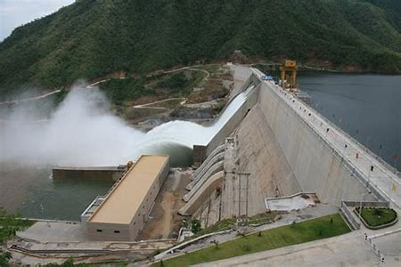

Hydropower

Myanmar has the potential for more than 100 GW of hydropower, of which only 3 GW has been developed so far. The largest potential is to be found in the Kayin, Shan, and Kayah states, where the Salween River is the major hydropower resource.
In the wake of ongoing political reforms and economic liberalisation, Myanmar’s strategic position at the crossroads of south and east Asia is leading to increased participation in regional energy cooperation.
Nonetheless, with an electrification rate of only 31 per cent and demand growth of 15 per cent per annum, Myanmar faces the familiar challenge of meeting a rapidly increasing domestic energy demand.
To this end, the government finalised its National Electrification Plan in June 2014. With the aim of providing electricity to the entire country by 2030, the plan emphasises hydropower as a long-term energy solution. In the plan’s scenario, installed hydropower capacity will almost triple to reach 9,000 MW by 2030.
Currently, hydropower comprises two-thirds of the country’s energy mix, with 3,151 MW of installed capacity from 25 operational projects. Another 46 GW of technically feasible potential has been identified so far, and a number of these projects are now under construction or at the advanced planning stage.
New policy and legal frameworks are being put in place to spur development and attract international engagement and investment. With the assistance of the Asian Development Bank, national energy policy has been reformed and the new Electricity Law was passed in October 2014.
The new legislation was drafted with the specific aim of encouraging international investment in electricity infrastructure and includes provisions for the issuance and revocation of licences to foreign investors.
There is already evidence of increased international engagement. Toshiba has been contracted to deliver the 308 MW Upper Yeywa hydropower facility via its Chinese subsidiary, Toshiba Hydro Power. The station is expected to enter commercial operation by 2018.
Asia World and China’s Hanergy Group were granted approval to develop the 1,400 MW Upper Thanlwin project, which will also provide electricity to south-western China.
These partnerships build on previous successes in international collaboration such as the Balu Chaung 3 project, which brought 52 MW of installed capacity into commercial operation in January 2014.
In December 2014, Myanmar received a credit of USD 100 million from the World Bank Group to develop the Irrawaddy River Basin. This will allow for feasibility studies and pioneering assessments which will take account of the effect of hydropower development on the entire river basin.